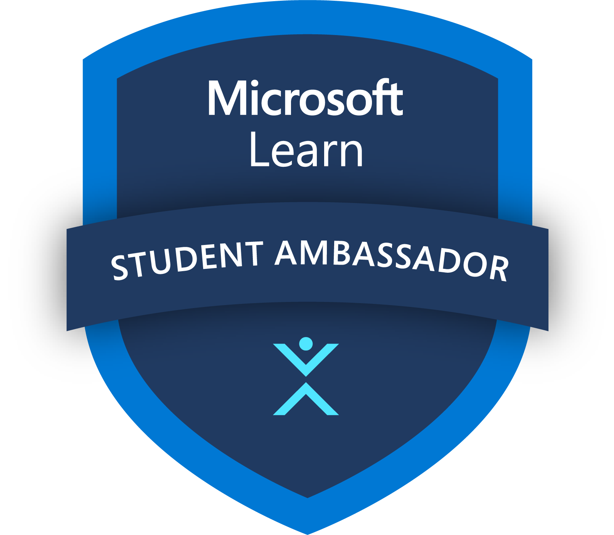
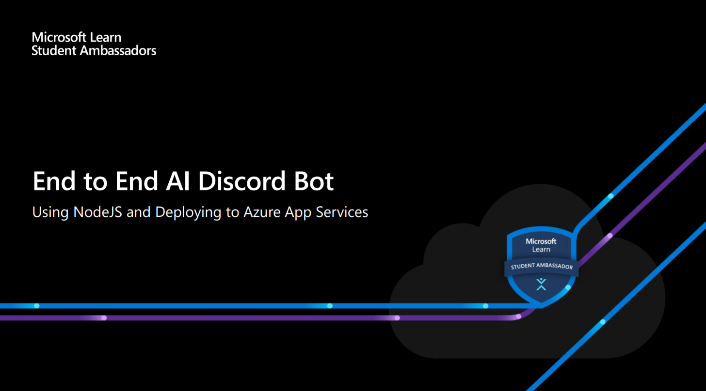

End to End AI Discord Bot - Using NodeJS and Deploying to Azure App Services
27th March, 2021 | 11:00 a.m. IST(GMT +5:30)
Platform - Microsoft Teams
Joining Link - Click Here to Watch Now
About the Event 🏂
In this session, we will be developing an AI enabled discord bot that uses a Text Toxicity Detection model to warn and flag unwanted messages on any discord server. The bot will be built using the discord.js library and we will also deploy it on Azure App Services to make the bot available for all the discord servers.
Agenda
- Brief about Machine Learning and TensorFlow.js library
- Quick walkthrough of discord.js library
- Building a discord bot and running it locally
- Introduction to Microsoft Azure
- Apply for GitHub Student Developer Pack and enjoy benefits like GitHub Pro, Free domains, Canva Professional account, Free access to 25+ Microsoft Azure cloud services plus $100 in Azure credit, and many more
- Deploy the Discord bot to Azure App Services for free
- Learn more about the Microsoft Learn Student Ambassador program and how you can apply to become an MLSA
Watch Now 👓
